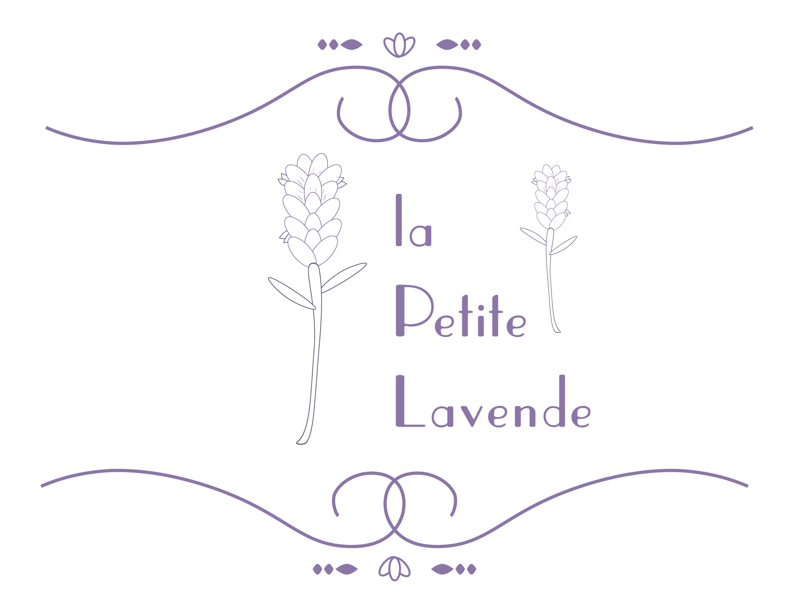
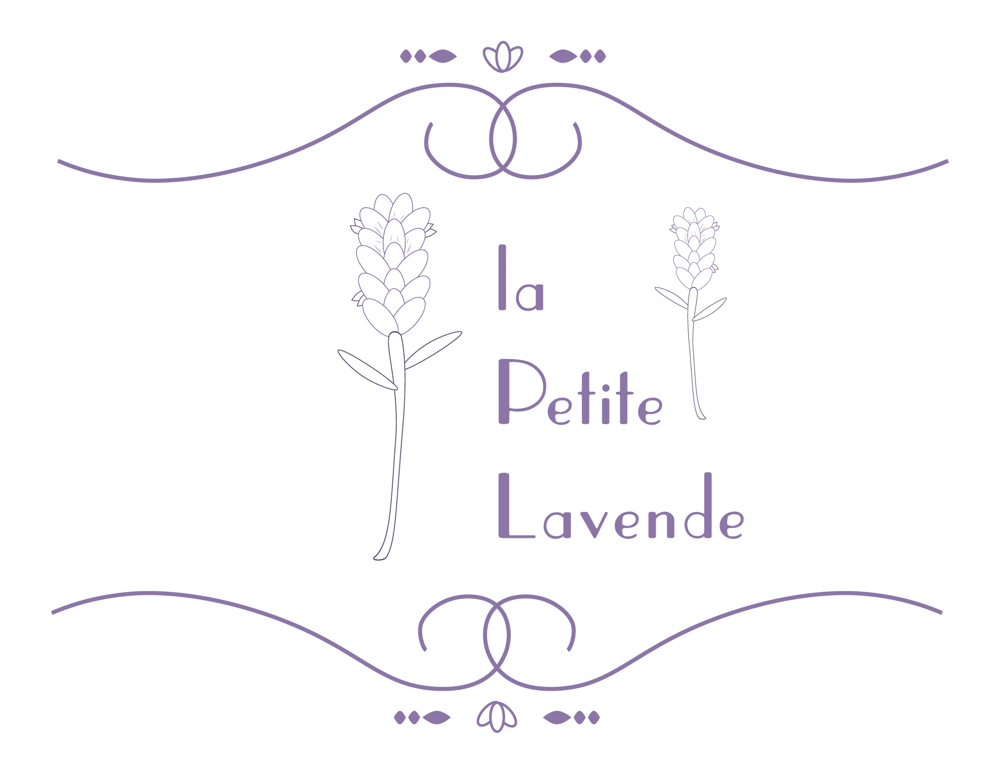
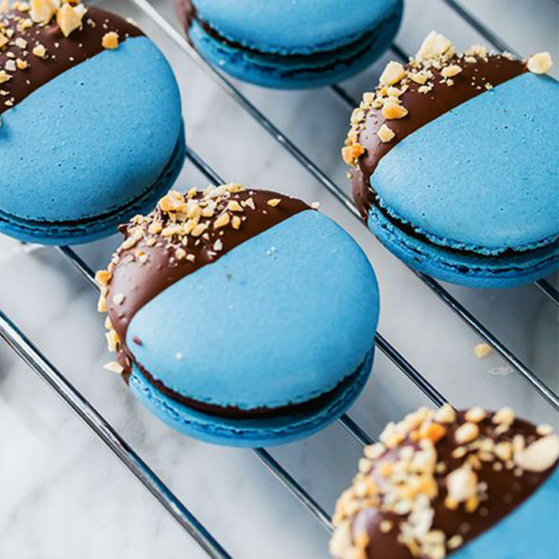
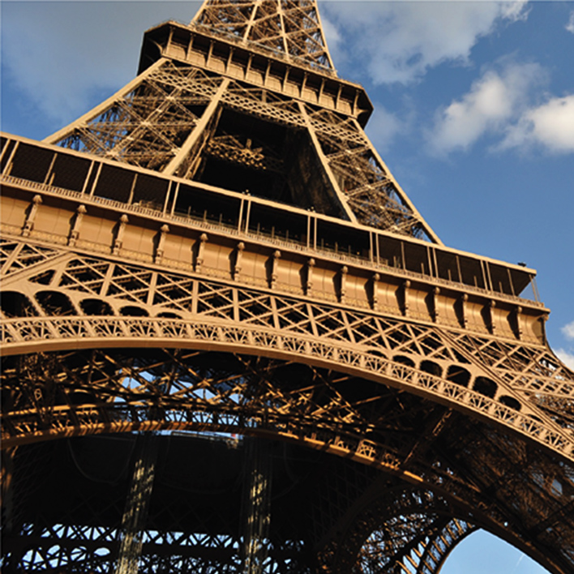
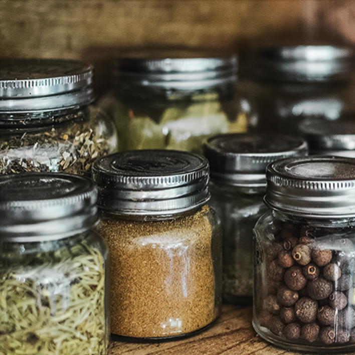

la Petite Lavende har siden 2011 serveret autentisk, fransk mad med mesterkokken Francis Blanc i spidsen.
I 2014 fik vi vores første michelin-stjerne og restauranten anses i dag af en bred skare af både gæster og anmeldere som den bedste franske restaurant i København.
Francis Blanc er opvokset i det sydlige Frankrig på sine forældres lavendelgård, men det gik hurtigt op for ham, at det var madlavning og ikke blomster, der virkeligt fangede ham. Han har arbejdet på nogle af de fineste restauranter i Paris og har siden 2004 beriget danskerne med det absolut bedste fra det franske gourmet køkken.
Bon Appétit!



